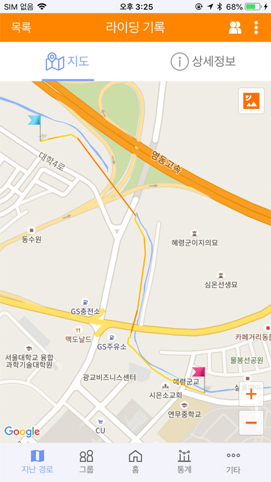
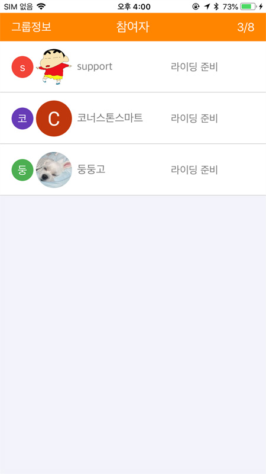
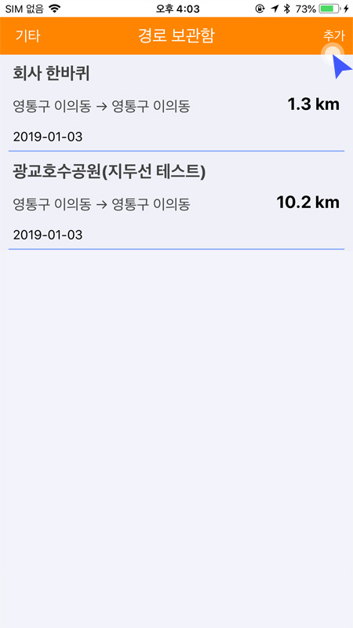
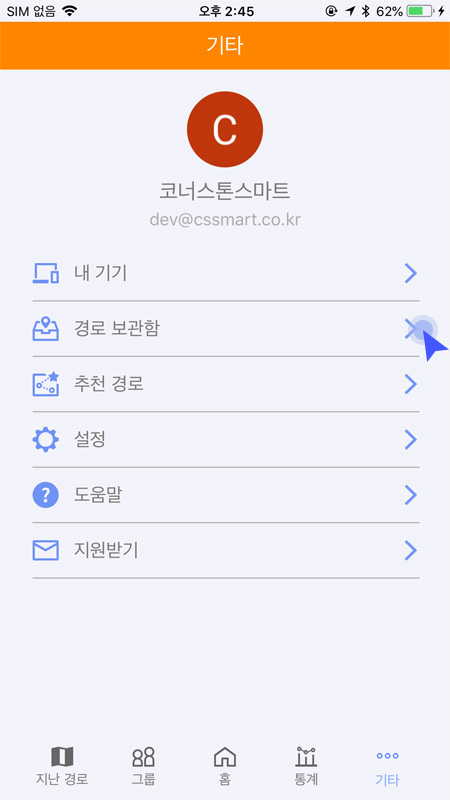
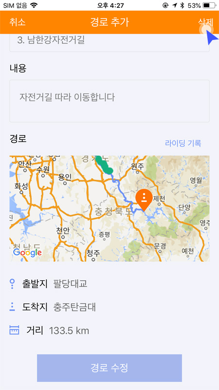

1.퀵 가이드
1.1 블루투스 주의사항
블루투스는 사용환경에 따라 수신감도가 달라질 수 있습니다. 사용 전에 사용환경을 확인해주시기 바랍니다.
1. 장애물(문,벽,건물 등)에 의한 신호 감소
2. 휴대폰 케이스에 의한 신호 감소
3. 많은 WIFI에 의한 신호 충돌
1.2 회원가입

로그인 화면에서 ‘회원 가입'버튼으로 가입 화면으로 이동합니다.
필수항목(이메일, 닉네임, 비밀번호)을 입력 후 회원가입을 눌러 가입을 완료합니다.
가입시 당사의 이용약관, 위치기반 서비스약관, 개인정보 취급방침에 동의처리 됩니다.
1.3 로그인
원하는 방식으로 로그인합니다.
이메일과 비밀번호를 이용한 방식과 SNS계정을 이용한 방식이 있습니다.
① 회원가입시 입력한 이메일로 로그인하기
지기에 회원가입한 이메일과 비밀번호를 입력하고 로그인을 합니다.
* 비밀번호 분실시‘비밀번호 찾기' 항목을 참고하세요.
② 구글, 페이스북 , 네이버 중 원하는 SNS 계정을 선택하여 로그인합니다.
1.4 라이딩
‘라이딩 버튼’을 클릭하여 라이딩 화면으로 이동합니다.
* 도난방지 모드일 때는 라이딩화면으로 이동할 수 없습니다.
‘시작' 버튼을 클릭하면 라이딩이 시작되고 트래킹을 시작합니다.
우측 상단의 설정버튼을 클릭하면 라이딩 옵션을 설정할수 있습니다.
* 라이딩중에는 설정기능을 사용할 수 없습니다.
① 라이딩 기록공개 : 라이딩 기록을 자동으로 공개할지 여부를 선택합니다. ② 목표거리알람 : 원하는 목표거리를 설정하고 설정값이 되면 알람이 울리도록 합니다. ③ 최고속도알람 : 라이딩중 최고속도를 설정하고 설정값에 도달하면 알람이 울리도록 합니다. ④ 평균속도알람 : 라이딩중 최저속도를 설정하고 설정값보다 속도가 느려지면 알람이 울리도록 합니다.
라이딩이 시작되면 위와 같이 화면이 변경되고 ‘종료'버튼을 클릭하면 라이딩이 종료되며 트래킹 정보는 서버에 저장됩니다.
라이딩 중 속도계 탭으로 이동하면 현재 속도를 상세하게 확인할수 있습니다.
① 현재 라이딩 한 시간을 나타냅니다 ② 속도를 나타내는 부분이며 평균속도와 최고속도를 같이 보여줍니다. 하단의 숫자는 목표로 설정한 값을 나타냅니다. ③ 거리관련된 수치를 보여주는 부분이며 현재거리, 설정목표거리, 고도, 경사도순입니다.
1.5 라이딩 기록 보기
메인 메뉴의 ‘라이딩 기록'을 통해 라이딩 목록 화면으로 이동합니다.
화면에 저장된 트래킹 목록이 표시되며, 클릭하면 지난 경로를 상세히 볼 수 있습니다.
라이딩 기록의 지도 탭에서는 트래킹한 코스가 지도에 표시됩니다.
라이딩 기록의 정보 탭에서는 트래킹기록이 수치로 자세하게 표시됩니다.
지난경로 화면에서 '공유버튼'  을 이용하여 SNS 등에 자신의 기록을 타인과 공유할수 있습니다.
을 이용하여 SNS 등에 자신의 기록을 타인과 공유할수 있습니다.
우측 상단의 '더보기버튼' 으로 웹에서 보기나 삭제 등을 선택할수 있습니다.
1.6 그룹라이딩
* 그룹라이딩은 여러사람이 함께 라이딩 할 때 사용하는 기능입니다. 아는 사람들이 모여 사용한다는 전제 하에 비밀번호를 사전에 공유하고 사용합니다.
* 한번에 하나의 그룹에만 참여할 수 있습니다. 타 그룹 참여시 현재 참여한 그룹을 나가기 한 후 참여 가능합니다.
* 그룹라이딩과 일반라이딩 기능을 동시에 사용할 수 없습니다. 그룹에 참여한 후에는 그룹라이딩이 기본으로 사용되며 그룹에서 나가기 한 이후에는 일반라이딩이 기본으로 사용됩니다.
‘그룹’을 클릭하여 그룹라이딩 목록으로 이동합니다.
원하는 그룹이 없거나 본인이 리더가 되어 그룹을 만들고자 할때 우측 상단의 + 버튼을 눌러 그룹을 추가할 수 있습니다.
그룹생성에 필요한 정보를 입력하여 그룹을 직접 생성할 수 있습니다.
그룹라이딩 목록이 나타나면 그룹정보를 확인할수 있습니다. (그룹리더,생성날짜, 출발지,목적지, 라이딩 날짜 등)
그룹정보 화면에서 우측 상단의 참여 버튼을 눌러 그룹에 참여할수 있습니다. 이때 리더가 생성한 비밀번호를 입력해야 참여가 가능합니다.
그룹에 참여하면 참여한 사람들의 목록과 라이딩 상태를 확인할수 있습니다.
그룹라이딩을 종료하면 우측 상단의 나가기 버튼을 눌러 그룹을 나갈수 있습니다. 나가기를 누르지 않으면 현 그룹은 그대로 유지 됩니다.
시작버튼을 눌러 라이딩을 시작합니다. 지도상에 참여자들이 라이딩순으로 표시되고 좌측 막대영역에 같은 순서로 표시해줍니다.
그룹에 참여한 멤버목록을 보여줍니다. 참여순으로 번호가 부여되며 라이딩 순서와는 관계가 없습니다. 마지막 업데이트 된 시간을 기준으로 나와의 간격을 나타내줍니다.
라이딩 중 속도계 탭으로 이동하면 현재 속도를 상세하게 확인할 수 있습니다.
1.7 경로보관함
* 경로보관함에 경로가 생성되어 있어야 라이딩시 경로를 불러올 수 있습니다.
1.7.1 경로추가
‘경로 보관함' 메뉴를 통해서 경로 보관함 목록으로 이동합니다.
경로 보관함 목록의 ‘추가’ 버튼으로 추가화면으로 이동하여 제목과 내용을 입력 후 경로를 추가합니다.
추가 화면의 ‘라이딩 기록'버튼을 통해서 자신의 라이딩 기록을 선택해서 가져 올 수 있습니다.
경로가 추가되면 출발지 및 목적지 그리고 경로가 지도에 표시되고 완료 버튼을 눌러 경로 추가를 완료합니다.
1.7.2 경로수정및 삭제
‘경로 보관함' 메뉴를 통해서 경로 보관함 목록으로 이동합니다.
수정 및 삭제 하려는 경로를 선택합니다.
내용을 수정하고 완료 버튼을 클릭하면 수정된 내용이 반영됩니다.
우측 상단의 ‘삭제'버튼을 클릭하면 경로가 삭제됩니다.
1.8 추천경로
* 추천경로의 목록은 자사에서 엄선한 라이딩 경로 입니다.
* 추천경로 메뉴는 원하는 경로를 경로보관함에 저장하고 라이딩시 경로를 가져와서 표시된 경로를 따라 라이딩 하는 기능입니다.
메인메뉴의 ‘추천경로' 메뉴를 통해서 추천경로 목록으로 이동합니다.
목록에서 경로를 클릭하면 상세정보를 볼 수 있습니다.
① 키워드 검색: 해당 버튼으로 키워드를 입력하여 경로를 검색할 수 있습니다. ② 위치 검색: 해당 버튼을 클릭하면 현재 자신의 위치를 조회하여 가까운 순으로 경로가 검색 됩니다. ③ 태그 검색: 해당 태그를 클릭하면 같은 태그가 포함된 경로를 검색합니다.
페이지 하단에 ‘보관함으로 가져오기'를 클릭하면 자신의 ‘경로 보관함'으로 이동되고 보관함 목록에서 확인할 수 있습니다.
1.9 통계보기
메인 메뉴의 ‘통계'를 통해 라이딩 통계 화면으로 이동합니다.
일별,주별,월별,연별로 라이딩 기록을 볼수 있습니다.
가장 상단의 기록은 1/6~1/12까지 한주동안 라이딩 횟수는 6회이며 합산거리와 시간을 나타냅니다. 탭을 눌러 이동하면 일일기록, 월별기록, 연별 기록을 추가로 확인할 수 있습니다.